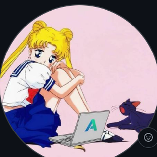

Fundamentos
Las bases del transformer: cómo se construye y procesa la secuencia de tokens.
-
Q01
¿Cómo funciona la tokenización y por qué importa?
La tokenización convierte texto en unidades pequeñas llamadas
tokens. El modelo no entiende palabras directamente, entiende IDs numéricos. Importa porque afecta coste, longitud de contexto, rendimiento multilingüe y precisión. -
Q02
¿Cómo funciona la atención en un transformer?
La atención permite que cada token decida qué otros tokens son relevantes. Usa
queries,keysyvaluespara calcular pesos y combinar información contextual. -
Q03
¿Qué es una ventana de contexto?
Es la cantidad máxima de tokens que el modelo puede procesar a la vez. Si crece demasiado, aumenta el coste, la memoria, la latencia y el modelo puede perder foco.
-
Q04
¿Qué son los embeddings?
Son vectores numéricos densos que representan tokens en un espacio donde la distancia captura relaciones semánticas. En LLMs preentrenados ya vienen aprendidos y se siguen ajustando si haces fine-tuning.
-
Q05
¿Cómo sabe el modelo el orden de las palabras?
Usa información posicional, como
positional embeddingsoRoPE. En modelos autoregresivos también se usa una máscara causal para impedir ver tokens futuros.
Fine-tuning
Cómo adaptar un modelo preentrenado sin romper lo que ya sabe.
-
Q06
¿Qué es LoRA?
LoRA adapta un modelo entrenando pequeñas matrices adicionales en lugar de modificar todos los pesos. Es más barato, rápido y reduce el riesgo de olvidar conocimiento previo.
-
Q07
¿Qué es QLoRA?
QLoRA combina LoRA con cuantización, normalmente a
4-bit. Se usa para ajustar modelos grandes con menos memoria GPU. -
Q08
¿Cómo evitas que un modelo olvide lo que ya sabe?
Usando bajo
learning rate, LoRA, mezcla de datos generales y específicos, validación continua y evitando sobreentrenamiento. -
Q09
¿Qué es la destilación de modelos?
Es entrenar un modelo pequeño para imitar a uno grande. Las empresas la usan para reducir coste, latencia y consumo manteniendo buen rendimiento.
-
Q10
¿Cómo manejas vocabularios enormes?
No se usan millones de palabras completas. Se usan subpalabras o bytes mediante
BPE,WordPieceo tokenización similar.
Generación
Estrategias de decodificación y cómo controlan la salida del modelo.
-
Q11
Beam search vs greedy decoding
Greedyelige siempre el token más probable: rápido y determinista.Beam searchmantiene varias opciones: mejor para traducción o generación estructurada. -
Q12
¿Qué hace la temperatura?
Controla la aleatoriedad escalando los
logitsantes del softmax. Temperatura baja → respuestas más conservadoras (conT=0equivale a greedy). Temperatura alta → más variedad y creatividad. -
Q13
Diferencia entre top-k y top-p
Top-klimita la elección a los k tokens más probables.Top-pelige tokens hasta cubrir una probabilidad acumulada determinada. -
Q14
¿Por qué los modelos autoregresivos son distintos de los masked models?
Los autoregresivos predicen el siguiente token de izquierda a derecha. Los
masked modelspredicen tokens ocultos dentro de una secuencia.
Conceptos avanzados
Las técnicas que cambian la conversación: RAG, CoT, MoE y few-shot.
-
Q15
¿Cómo funciona RAG y por qué mejora la precisión factual?
RAGcombina recuperación de documentos con generación. Es mejor para hechos cambiantes porque consulta información externa en lugar de depender solo de la memoria del modelo. -
Q16
¿Por qué Chain-of-Thought mejora el rendimiento?
Porque fuerza al modelo a descomponer problemas en pasos intermedios, lo que mejora razonamiento, planificación y resolución de problemas complejos.
-
Q17
¿Qué es Mixture of Experts?
Es una arquitectura donde solo algunos submodelos expertos se activan para cada entrada. Permite aumentar capacidad sin disparar proporcionalmente el coste de inferencia.
-
Q18
Zero-shot vs few-shot
Zero-shotresuelve sin ejemplos.Few-shotusa algunos ejemplos en el prompt. Few-shot suele ganar cuando el formato o la tarea son específicos.
Matemáticas
Las funciones y métricas que aparecen una y otra vez bajo el capó.
-
Q19
¿Por qué se usa softmax en atención?
Porque convierte puntuaciones en probabilidades normalizadas. Así el modelo puede ponderar qué tokens importan más.
-
Q20
¿Qué mide la cross-entropy loss?
Mide qué tan lejos está la distribución predicha por el modelo de la distribución correcta. Penaliza mucho cuando el modelo asigna baja probabilidad a la respuesta correcta.
-
Q21
¿Qué es KL divergence?
Mide la diferencia entre dos distribuciones de probabilidad. Aparece en
distillation,RLHF, regularización y alineamiento de modelos. -
Q22
¿Por qué eran un problema los vanishing gradients?
Porque impedían que redes profundas propagaran señal hacia atrás y aprendieran dependencias largas. Los transformers lo mitigan con
residual connectionsyLayerNorm; la atención resuelve un problema distinto pero relacionado: el acceso directo entre tokens lejanos sin recorrer una cadena recurrente.

Recopilación abierta. Si encuentras un error o tienes una mejor explicación, abre un issue o un pull request.